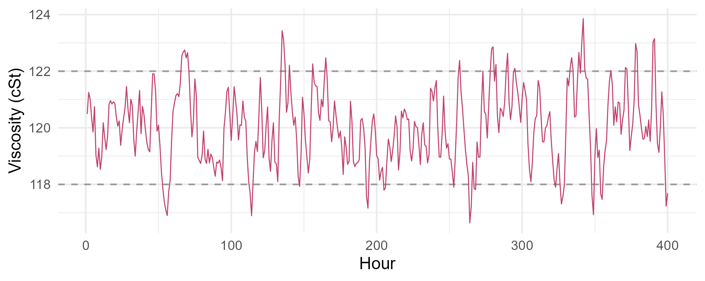
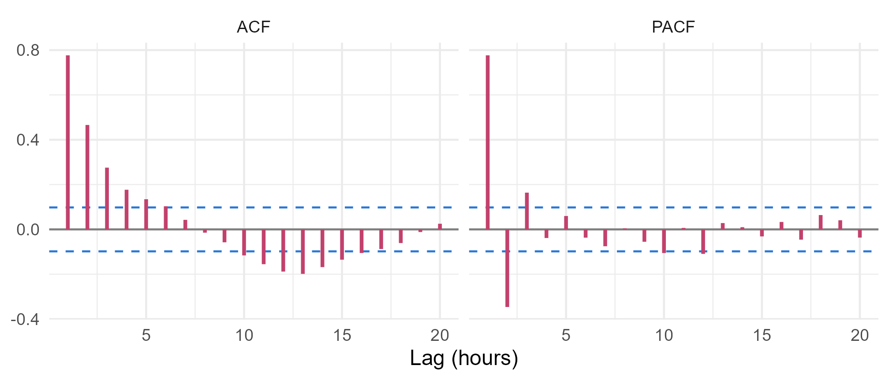

Module 6 · Lesson 5 of 13 Week 94 of 160 About 5–7 hours
Moving-average and ARMA models
Memory of shocks, and models with both
Simulate a moving-average process and see its ACF cut off, meet invertibility and why two MA models can share one ACF, and see the MA(1) that overdifferencing creates. Then identify a model for the hourly viscosity of a product blend from its ACF and PACF, compare candidates by AIC, fit an ARMA(1,1), read its impulse response, and use it to predict how often the blend goes off spec.
An AR model remembers the series’ own past values. A moving-average model remembers past shocks:
y_t = \mu + \varepsilon_t + \theta_1 \varepsilon_{t-1} + \cdots + \theta_q \varepsilon_{t-q}.
Each disturbance affects the series for exactly q steps, then it’s gone. (The name is unfortunate: it has nothing to do with Lesson 2’s moving averages of the data.) MA terms appear when something smears each disturbance over a few periods, like a mixing tank, a sample that spans two hours, or a filter in an analyzer. And combining both kinds of memory gives the ARMA(p, q) model, which describes most stationary series with only a few parameters.
The example is a product blend whose viscosity the lab measures every hour. The specification is 120 ± 2 cSt.
AR remembers where the process was, MA remembers what hit it. Put them together and you get ARMA, the workhorse of time series. Let’s identify one!
In this lesson you’ll:
- simulate an MA(1) process, and see its ACF cut off
- check invertibility, and see why it’s needed
- recognize the MA(1) created by overdifferencing
- identify a model from the ACF and PACF, and compare candidates by AIC
- fit an ARMA(1,1), and read its impulse response
MA(1)
In an MA(1), y_t = \varepsilon_t + \theta\varepsilon_{t-1}, each value shares one shock with its neighbor and none with anything further away. So its autocorrelation at lag 1 is \theta/(1 + \theta^2), and at every lag beyond 1, exactly 0. An MA(q)’s ACF cuts off after lag q, the mirror image of an AR(p)’s PACF.
Your turn. Simulate 3,000 values of an MA(1) with \theta = 0.6, and compare the autocorrelations at lags 1 and 2 with the theory.
e[-1] drops the first shock, so the previous shocks are e[-3001], which drops the last.
set.seed(6051)
e <- rnorm(3001)
y <- e[-1] + 0.6 * e[-3001] # each value plus 0.6 times the shock before it
r <- acf(y, lag.max = 3, plot = FALSE)$acf
c(lag1 = r[2], lag2 = r[3], theory_lag1 = 0.6 / (1 + 0.6^2))0.42 at lag 1, close to the theoretical 0.44, and −0.02 at lag 2: nothing beyond lag 1. Even with \theta much larger, an MA(1)’s lag-1 autocorrelation can’t exceed 0.5, since \theta/(1 + \theta^2) is at most \frac12, at \theta = 1. A sample ACF with a spike of 0.8 at lag 1 and nothing else isn’t an MA(1).
Invertibility
Your turn. Compare the theoretical ACFs of two MA(1) models, \theta = 0.6 and \theta = 1/0.6.
The second model has \theta = 1/0.6.
rbind(theta_0.6 = ARMAacf(ma = 0.6, lag.max = 3), theta_1.67 = ARMAacf(ma = 1 / 0.6, lag.max = 3))Identical: 0.441 at lag 1 for both. Since \theta/(1 + \theta^2) doesn’t change when \theta is replaced by 1/\theta, the data can’t tell the two apart. The convention is to choose the invertible one, |\theta| < 1, for which the shocks can be recovered from the past data, \varepsilon_t = y_t - \theta y_{t-1} + \theta^2 y_{t-2} - \cdots. That’s what forecasting needs. With |\theta| > 1, that sum blows up.
The condition for an MA(q) to be invertible mirrors Lesson 4’s stationarity condition: every root of 1 + \theta_1 z + \cdots + \theta_q z^q must lie outside the unit circle.
Your turn. Check both models’ roots.
The polynomial for \theta = 1/0.6 is 1 + (1/0.6)z.
c(theta_0.6 = Mod(polyroot(c(1, 0.6))), theta_1.67 = Mod(polyroot(c(1, 1 / 0.6))))1.67 for \theta = 0.6, outside the unit circle: invertible. 0.6 for \theta = 1.67, inside: not invertible. arima() always reports the invertible version. Any MA model is stationary, whatever its coefficients, so for MA models the question is only invertibility, and for AR models only stationarity.
The fingerprint of overdifferencing
Lesson 3 warned against differencing a series that’s already stationary. Here’s why. Differencing white noise gives \varepsilon_t - \varepsilon_{t-1}: an MA(1) with \theta = -1, exactly on the edge of invertibility.
Your turn. Difference 2,000 values of white noise, and look at the lag-1 autocorrelation and the MA(1) coefficient arima() finds.
An MA(1) has q = 1.
set.seed(6052)
w <- rnorm(2000)
d <- diff(w)
c(lag1 = acf(d, plot = FALSE)$acf[2], theta = coef(arima(d, order = c(0, 0, 1), include.mean = FALSE)))A lag-1 autocorrelation of −0.50 and \hat\theta = -0.999. That’s the fingerprint of overdifferencing: a large negative spike at lag 1, about −0.5, and an MA coefficient near −1. If you see it after differencing, you’ve probably differenced once too often. Go back one step.
Identifying a model
Here’s the rule of thumb, from Box and Jenkins:
| Model | ACF | PACF |
|---|---|---|
| AR(p) | decays gradually | cuts off after lag p |
| MA(q) | cuts off after lag q | decays gradually |
| ARMA(p, q) | decays gradually | decays gradually |
Here’s the viscosity, with its ACF and PACF:
ggplot(data.frame(hour = seq_along(visc), v = visc), aes(x = hour, y = v)) +
geom_hline(yintercept = c(118, 122), linetype = "dashed", color = "grey60") +
geom_line(color = "#C2416C", linewidth = 0.35) +
labs(x = "Hour", y = "Viscosity (cSt)") +
theme_minimal(base_size = 12)
cf <- rbind(data.frame(lag = 1:20, value = acf(visc, lag.max = 20, plot = FALSE)$acf[-1], fn = "ACF"),
data.frame(lag = 1:20, value = as.numeric(pacf(visc, lag.max = 20, plot = FALSE)$acf), fn = "PACF"))
ggplot(cf, aes(x = lag, y = value)) +
geom_hline(yintercept = 0, color = "grey50") +
geom_hline(yintercept = c(-1, 1) * 1.96 / sqrt(400), linetype = "dashed", color = "#2a78d6") +
geom_segment(aes(xend = lag, yend = 0), color = "#C2416C", linewidth = 1) +
facet_wrap(~ fn) +
labs(x = "Lag (hours)", y = NULL) +
theme_minimal(base_size = 12)
The dashed lines on the time plot are the specification limits, 118 and 122 cSt.
Your turn. Look at the numbers behind the plots: the ACF and PACF at lags 1 to 5.
The partial autocorrelations come from pacf().
rbind(acf = acf(visc, lag.max = 5, plot = FALSE)$acf[2:6],
pacf = pacf(visc, lag.max = 5, plot = FALSE)$acf[1:5])The ACF decays smoothly, 0.78, 0.47, 0.28, 0.18, 0.13, so it isn’t a low-order MA. The PACF doesn’t quite cut off either: 0.78, −0.35, then 0.16 at lag 3, outside the bounds of ±0.10, and alternating after that. Neither function cuts off cleanly, which points to a mixed ARMA model. Real data rarely follow the table exactly, so the next step is to fit a few candidates and compare them.
Your turn. Fit five candidates, AR(1), MA(1), ARMA(1,1), AR(2) and MA(2), and compare their AIC values. Lower is better.
AIC() works on arima() fits.
orders <- list(ar1 = c(1, 0, 0), ma1 = c(0, 0, 1), arma11 = c(1, 0, 1), ar2 = c(2, 0, 0), ma2 = c(0, 0, 2))
sapply(orders, function(o) AIC(arima(visc, order = o)))ARMA(1,1) has the lowest AIC, 942.1, followed by AR(2) at 953.0. AR(1) and MA(1) are far behind, at 1002 and 1060. The ARMA(1,1) does with three parameters (plus the mean) what a pure AR or MA would need several more terms for. That’s the principle of parsimony: the simplest model that captures the structure.
ARMA(1,1)
Your turn. Fit the ARMA(1,1), y_t - \mu = \phi(y_{t-1} - \mu) + \varepsilon_t + \theta\varepsilon_{t-1}, and look at its estimates and standard errors.
One MA term: q = 1.
fit <- arima(visc, order = c(1, 0, 1))
rbind(estimate = coef(fit), se = sqrt(diag(vcov(fit))))\hat\phi = 0.62 (SE 0.05), \hat\theta = 0.49 (SE 0.05), and a mean of 120.03 cSt (SE 0.15), right on target. Both coefficients are many standard errors from 0, so neither part of the model can be dropped. A physical reading: the blend tank smooths the composition (the AR part), and each hourly sample averages over a stretch of flow that overlaps the next one (the MA part).
Any stationary ARMA model can be written as an infinite MA, y_t - \mu = \varepsilon_t + \psi_1\varepsilon_{t-1} + \psi_2\varepsilon_{t-2} + \cdots. The \psi weights are the impulse response: the effect of one shock on the following hours. ARMAtoMA() computes them.
Your turn. Find the fitted model’s first six \psi weights.
The MA coefficient is the second, coef(fit)[2].
fit <- arima(visc, order = c(1, 0, 1))
ARMAtoMA(ar = coef(fit)[1], ma = coef(fit)[2], lag.max = 6)1.10, 0.68, 0.42, 0.26, 0.16, 0.10. A disturbance of 1 cSt is still 1.1 cSt an hour later, larger than at first because the MA term adds to the AR carry-over, and then it fades by a factor of 0.62 an hour: after six hours, a tenth is left. So if the blend goes off spec, it’ll stay off for several hours unless someone corrects it. That’s useful to know for setting up alarms.
Challenge round
Challenge 1 · Let the computer choose. The forecast package’s auto.arima() searches over ARIMA orders by AICc, testing for differencing first. What does it choose for the viscosity?
The function is forecast::auto.arima().
fit <- forecast::auto.arima(visc)
forecast::arimaorder(fit)(1, 0, 1): ARMA(1,1), no differencing, the same as the hand-built comparison. auto.arima() is a good assistant, but not a substitute for looking at the data: Lesson 6 shows its search and its limits, and Lesson 7 how to check whatever it chooses.
Challenge 2 · How often is the blend off spec? The fitted model implies a stationary distribution for the viscosity: normal, with the model’s mean and variance \gamma_0 = \sigma^2(1 + 2\phi\theta + \theta^2)/(1 - \phi^2). Use it to compute the probability that an hour’s viscosity is above the upper limit, 122 cSt, and compare it with the share of hours that actually were.
The SD is the square root of gamma0.
fit <- arima(visc, order = c(1, 0, 1))
phi <- coef(fit)[[1]]; theta <- coef(fit)[[2]]; mu <- coef(fit)[[3]]
gamma0 <- fit$sigma2 * (1 + 2 * phi * theta + theta^2) / (1 - phi^2)
c(model_sd = sqrt(gamma0), data_sd = sd(visc), p_above_122 = pnorm(122, mu, sqrt(gamma0), lower.tail = FALSE), share_above_122 = mean(visc > 122))The model’s SD, 1.339 cSt, matches the data’s, 1.342. It predicts that 7.0% of hours are above 122 cSt, and 7.8% actually were. The shock SD is only 0.78 cSt, but the dynamics amplify it by 1.7 times. To narrow the blend’s spread, it’s the persistence, the AR part, that the process engineers should attack, for example with faster feedback from the analyzer.
Quick quiz
1. What does an MA(q) model’s ACF look like?
Each shock affects only q steps, so observations more than q apart share none.
2. Why do we require MA models to be invertible?
Recovering the shocks is what forecasting needs.
3. After differencing, the ACF has a spike of −0.5 at lag 1 and an MA(1) fit gives \theta \approx -1. What does that suggest?
Differencing a stationary series creates exactly that MA(1).
4. Neither the ACF nor the PACF cuts off. Which model family should you try?
Then compare a few low-order candidates by AIC.
5. What does the principle of parsimony say?
Extra parameters add estimation error to every forecast.
6. What are the \psi weights of an ARMA model?
They come from writing the model as an infinite MA.
Wrap-up
You can now identify and fit ARMA models. Here’s what you’ve learned:
- MA(q) models remember the last q shocks, so their ACF cuts off after lag q: an MA(1) with \theta = 0.6 has 0.44 at lag 1 and nothing beyond.
- Invertibility: \theta and 1/\theta give the same ACF, and the convention is |\theta| < 1.
- Overdifferencing leaves a fingerprint: a lag-1 autocorrelation near −0.5, and \theta near −1.
- Identification: the viscosity’s ACF and PACF both decay, AIC prefers ARMA(1,1) (942.1) to AR(2) (953.0), and
auto.arima()agrees. - Interpretation: \hat\phi = 0.62 and \hat\theta = 0.49. A disturbance fades to a tenth in six hours, and the model predicts 7.0% of hours above the 122 cSt limit, against 7.8% observed.
TipPractice in RStudio (optional, about an hour)
Download blend_viscosity.csv into your project’s data-raw/ folder.
- Identify from simulations. Simulate 400 points from MA(2) with \theta = (0.5, 0.4), AR(1) with \phi = 0.7, and ARMA(1,1) with \phi = 0.7, \theta = 0.4 with
arima.sim(), and plot each one’s ACF and PACF withggtsdisplay(). Could you tell them apart without knowing which is which? - The extended ACF. The TSA package’s
eacf(visc)prints a table of symbols that helps identify p and q together. Install it and try it. Where’s the triangle of “o”s? - Overfitting. Fit ARMA(2,1) and ARMA(1,2) to the viscosity. Are the extra coefficients significant? Do the AIC values improve?
- Off-spec alarms. Using the \psi weights, how large a single shock would it take to push the viscosity from 120 to above 122 an hour later?
NoteKey words from this lesson
- Moving-average model, MA(q)
- A model in which each value is a linear combination of the current shock and the previous q shocks.
- ARMA(p, q) model
- A model with p autoregressive and q moving-average terms.
- Invertibility
- The condition that an MA model’s shocks can be recovered from past data: all roots of 1 + \theta_1 z + \cdots + \theta_q z^q outside the unit circle.
- Overdifferencing
- Differencing a series that’s already stationary. It creates an MA(1) with \theta near −1.
- Model identification
- Choosing candidate orders p and q from the ACF and PACF.
- Parsimony
- Preferring the simplest adequate model.
- \psi weights
- The coefficients of a model’s infinite-MA form, which give the impulse response to one shock.
NoteWant to read more?
- Rob Hyndman and George Athanasopoulos, Forecasting: Principles and Practice (3rd edition), sections 9.4, “Moving average models” and 9.5, “Non-seasonal ARIMA models”.
- Penn State’s STAT 510, lesson 2, on MA models and the identification table, and lesson 3, on fitting ARIMA models.
- Robert Shumway and David Stoffer, Time Series: A Data Analysis Approach Using R (2019), chapter 4, on ARMA models, including invertibility and the \psi weights.